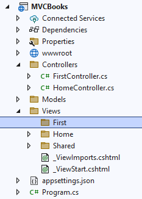
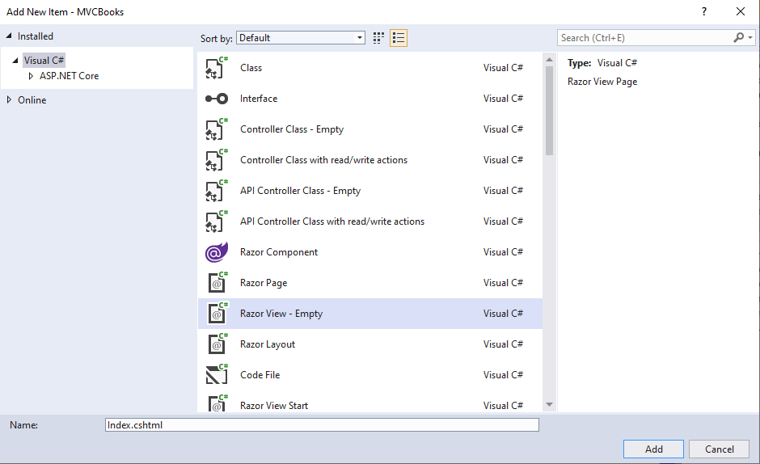
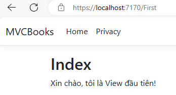
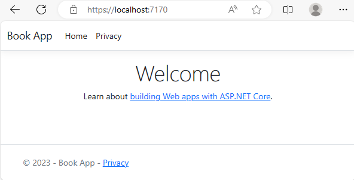
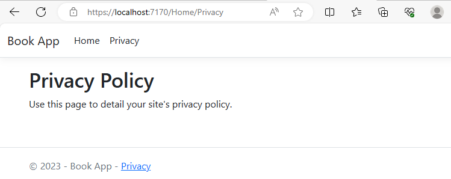
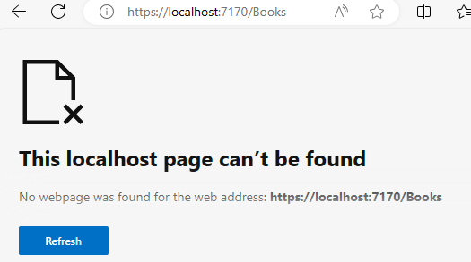
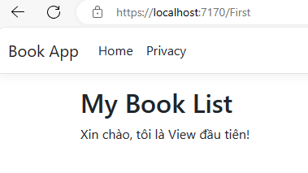
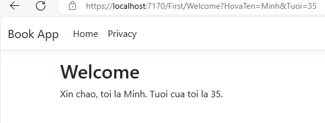

Nội dung bài học
Trong bài Thêm một Controller chúng ta đã thêm một Controller và trong bài này chúng ta sẽ thêm một View đến dự án MVCBooks. Trước khi thêm View, chúng ta cần điều chỉnh phương thức Index từ lớp FirstController mà chúng ta đã thêm trong bài trước như sau:
Cần nhớ lại rằng, các phương thức trong lớp Controller được xem như là các phương thức hành động (action methods) và trả về IActionResult hay lớp được thừa kế từ ActionResult.
Chúng ta sẽ gọi phương thức View() từ Controller và dùng view template để phát sinh mã HTML đến trình duyệt (client).
1. Trong dự án MVCBooks từ cửa sổ Explorer, nhấn chuột phải thư mục Views > Add > New Folder và tạo một thư mục mới tên First (bên cạnh 2 thư mục mặc định là Home và Shared )
Chúng ta phải đặt tên thư mục là First vì chúng ta có Controller là FirstController.
2. Nhấn chuột phải vào thư mục First vừa tạo chọn Add > New Item. Trong hộp thoại Add New Item – MVCBooks chọn Razor View – Empty, giữ mặc định trong mục Name và nhấn Add
3. Thay nội dung mặc định của tập tin Index.cshtml
Thực thi https://localhost:7170/First
First trên URL là FirstController (Xem lại bài trước) sẽ thực thi phương thức Index gọi hàm View() trả về một tập tin view template. Vì tập tin này không được xác định cụ thể nên tập tin view template mặc định là Index.cshtml trong thư mục First sẽ được dùng.
Để thay đổi bố cục và nội dung các View, chúng ta tìm và mở tập tin _Layout.cshtml trong thư mục Shared. Thay đổi tiêu đề (title), chân trang (footer) và các mục thanh thực đơn (menu links) như sau:
Thực thi https://localhost:7170/
Chọn Privacy
Chọn Book App
Chúng ta đã thêm Controller tên Books thay Home
Và vì chúng ta chưa định nghĩa Controller này đến dự án nên trang sẽ báo lỗi như trên.
Những thay đổi từ tập tin _Layout.cshtml ảnh hưởng đến các view là nhờ định nghĩa trong tập tin _ViewStart.cshtml trong thư mục Views
Chúng ta sử dụng thuộc tính Layout để thiết lập layout cho các view. Giá trị bên phải là tên của tập tin _Layout.cshtml và chúng ta có thể thay thế bằng một tập tin bất kỳ nào đó định nghĩa layout cho các view. Nếu không có tập tin layout, giá trị null sẽ được gán đến thuộc tính Layout:
Trở lại tập tin Index.cshtml trong thư mục Views/First và thay đổi nội dung như sau:
Chúng ta gán giá trị Book List đến thẻ Title trong tập tin _Layout.cshtml thông qua cấu trúc dictionary ViewData:
Lưu và thực thi https://localhost:7170/First
Trong bài trước chúng ta đã thêm phương thức Welcome đến FirstController như sau:
Thay đổi phương thức Welcome trên thành:
Tạo tập tin Welcome.cshtml trong thư mục Views/First (tương tự tạo tập tin Index.cshtml và cũng cần chú ý rằng tên tập tin trùng tên phương thức Welcome) và thay đổi nội dung như sau:
Lưu và thực thi https://localhost:7170/First/Welcome?HovaTen=Minh&Tuoi=35
Với mô hình MVC, các View sẽ không thực hiện các thao tác nghiệp vụ (business logic) cũng như tương tác trực tiếp đến cơ sở dữ liệu. Một View sẽ làm việc với dữ liệu được cung cấp bởi các Controller. Trong dự án MVCBooks, các phương thức hành động từ FirstController (Index và Welcome) sẽ cung cấp dữ liệu cho các view templates trong thư mục Views/First (Index.cshtml và Welcome.cshtml). Chúng ta cũng dùng cấu trúc từ điển ViewData làm phương tiện trung gian trao đổi dữ liệu giữa Controller và View.